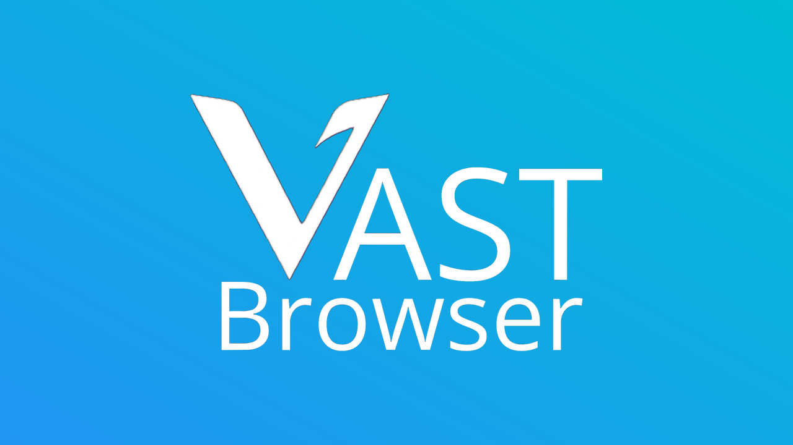

The web, on your biggest screen.
A fast, remote-friendly web browser for your TV — browse any website from the couch with nothing but your remote.
Latest release v0.3.0

Built for the living room
Everything is designed around one idea: the only thing in your hand is a TV remote.
Remote-first cursor
An on-screen cursor and dedicated scroll mode make any website usable with a D-pad — no mouse or keyboard needed.
Real browser engine
Powered by Mozilla's browser components — the same technology behind Firefox — not a wrapped mini-view.
Ad blocking (Pro)
The Pro flavor supports content-blocking extensions like uBlock Origin for a cleaner, faster web on your TV.
Two flavors
Choose the lightweight WebView build, or the Pro build with Mozilla's full GeckoView engine bundled in.
Frequent updates
Engine updates land automatically as Mozilla ships them, and every release is published free on GitHub.
Verifiable builds
Every APK is signed and ships with SHA-256 checksums, so you can verify exactly what you install.
Pick your flavor
Most Android TV and Fire TV devices are arm64; older Fire TV sticks are arm v7.
VastBrowser
Uses your TV's built-in WebView engine. Smallest download, great for most sites.
x86 / x86_64 builds and SHA-256 checksums are on the full release page.
Installed in two minutes
Download the APK for your device on your phone or computer.
Send it to your TV — the free Send Files to TV app is the easiest way, or use a USB drive.
On the TV, enable Install unknown apps for your file manager in Settings.
Open the APK and install. Developers can use
adb install VastBrowser-arm64-v8a.apk.